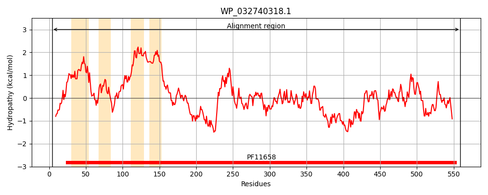
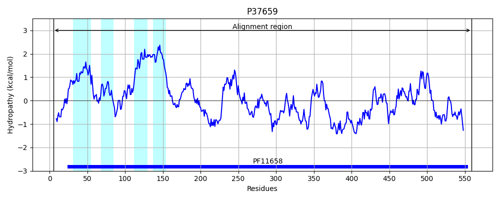
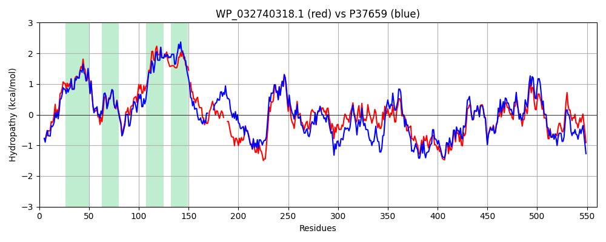

Hit Accession: P37659
Hit TCID: 9.B.275.1.1
Hit Description: gnl|BL_ORD_ID|10124 gnl|TC-DB|P37659|9.B.275.1.1 Cellulose biosynthesis protein BcsG OS=Escherichia coli (strain K12) GN=bcsG PE=4 SV=1
Mach Len: 560
e:0.000000
Query TMS Count : 4
Hit TMS Count: 4
TMS-Overlap Score: 4.000000
Predicted Substrates:None
BLAST Alignment:
Score: 2280 , Bit scores: 882 bits, E-value: 0.0e+00, Alignment length: 560, Percentage identity: 74
Query: 4 TKPTATPLPLWQYWRGLGGWNLYFLVKFALLWAGYLNFHPMLNLVFLAFLLVPIPREKLHRIRHWIAIPLGFALFWHDTWLPGPETLLSQGSQIAGFSASYIWDLIVRFINWSMVGAFFVLLVLWLFISQWLRVTVFVSAMVVWLAVSPLL-PAFTLWPAGQPTTAAATTAPANTGANAAAGAATS---PASSDIPPQTEPPTSANLTNWLNGFYAAEQKRKTPFPDQLPADAQPFDLLVINICSLSWSDIEAAGLMDHPLWKHFDIVFKNFNSATSYSGPAAVRLLRASCGQLSHTNLYQPSGADCYLFENLAKLGFNQQLMLGHNGLFGDFLKELRSLGGMQSPLMDQTGLPVSLQAFDGSPVYEDLAVLNRWLKTEEASSNPRSATFYNTLPLHDGNHFPGQSKTADYKVRAQKLFDDLDNFFTELEKSGRKVMVVVVPEHGGALKGDKMQVSGLRDIPSPSITNVPTAVKFFGMKAPHEGAPIIIDQPSSYLAVSELVVRALDGKMFSEDSVNWQQYVANLPQSAAVSENANAIVIQYQGKPYVQLNGGSWVPYPQ 559
T+ TA P LWQYWRGL GWN YFLVKF LLWAGYLNFHP+LNLVF AFLL+P+PR LHR+RHWIA+P+GFALFWHDTWLPGPE+++SQGSQ+AGFS Y+ DL+ RFINW M+GA FVLLV WLF+SQW+R+TVFV A+++WL V L P+F+LWPAGQPTT TT G NAAA A + P D+P QT PPT+ANL WLN FY AE KRK+ FP LPADAQPF+LLVINICSLSWSDIEAAGLM HPLW HFDI FKNFNSATSYSGPAA+RLLRASCGQ SHTNLYQP+ DCYLF+NL+KLGF Q LM+GHNG FG FLKE+R GGMQS LMDQT LPV L FDGSPVY+D AVLNRWL E N RSATFYNTLPLHDGNH+PG SKTADYK RAQK FD+LD FFTELEKSGRKVMVVVVPEHGGALKGD+MQVSGLRDIPSPSIT+VP VKFFGMKAPH+GAPI+I+QPSS+LA+S+LVVR LDGK+F+ED+V+W++ + LPQ+A VSEN+NA+VIQYQ KPYV+LNGG WVPYPQ
Sbjct: 5 TQNTAMPSSLWQYWRGLSGWNFYFLVKFGLLWAGYLNFHPLLNLVFAAFLLMPLPRYSLHRLRHWIALPIGFALFWHDTWLPGPESIMSQGSQVAGFSTDYLIDLVTRFINWQMIGAIFVLLVAWLFLSQWIRITVFVVAILLWLNVLTLAGPSFSLWPAGQPTTTVTTT-----GGNAAATVAATGGAPVVGDMPAQTAPPTTANLNAWLNNFYNAEAKRKSTFPSSLPADAQPFELLVINICSLSWSDIEAAGLMSHPLWSHFDIEFKNFNSATSYSGPAAIRLLRASCGQTSHTNLYQPANNDCYLFDNLSKLGFTQHLMMGHNGQFGGFLKEVRENGGMQSELMDQTNLPVILLGFDGSPVYDDTAVLNRWLDVTEKDKNSRSATFYNTLPLHDGNHYPGVSKTADYKARAQKFFDELDAFFTELEKSGRKVMVVVVPEHGGALKGDRMQVSGLRDIPSPSITDVPVGVKFFGMKAPHQGAPIVIEQPSSFLAISDLVVRVLDGKIFTEDNVDWKKLTSGLPQTAPVSENSNAVVIQYQDKPYVRLNGGDWVPYPQ 559 | Protein Hydropathy Plots: |
|---|
|  |  |
Pairwise Alignment-Hydropathy Plot:
|
|---|
|  |